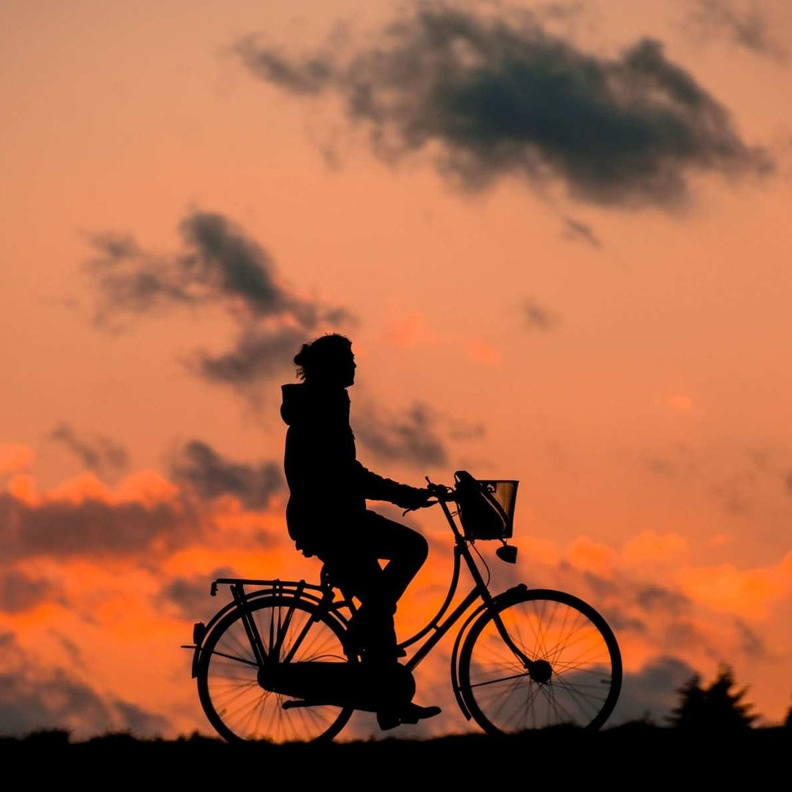

Bruselas
Bruselas es la capital de Bélgica, de la Comunidad Francesa de Bélgica y de la Comunidad Flamenca. Se le conoce popularmente también como capital de la Unión Europea junto a Luxemburgo y Estrasburgo.
Bruselas es la capital de Bélgica, de la Comunidad Francesa de Bélgica y de la Comunidad Flamenca. Se le conoce popularmente también como capital de la Unión Europea junto a Luxemburgo y Estrasburgo.

Lisboa es la capital costera y montañosa de Portugal. Desde el imponente castillo de San Jorge, la vista abarca los edificios de colores pastel en la ciudad antigua, el estuario del Tajo y el puente colgante 25 de Abril. Cerca, el Museo Nacional del Azulejo exhibe 5 siglos de azulejos de cerámica decorativos. Justo fuera de Lisboa hay una franja de playas en el Atlántico, desde Cascaes hasta Estoril.
Sevilla es un municipio y una ciudad de España, capital de la provincia homónima y de Andalucía.5 Contaba con 691 395 habitantes en 2020,6 por lo que es la ciudad más poblada de Andalucía, la cuarta de España7 después de Madrid, Barcelona y Valencia y la 32.ª de la Unión Europea.
Amsterdam es la capital de los Países Bajos, conocida por su patrimonio artístico, su elaborado sistema de canales y sus casas angostas con fachadas de dos aguas, herencias de la Edad de Oro de la ciudad durante el siglo XVII. El Distrito de Museos alberga el Museo van Gogh, obras de Rembrandt y Vermeer en el Rijksmuseum, y arte moderno en el Museo Stedelijk. El ciclismo es clave en la identidad de la ciudad y existen varios senderos para practicarlo.
Florencia, capital de la región de Toscana en Italia, alberga varias obras maestras de la arquitectura y el arte renacentista. Una de sus atracciones más icónicas es el Domo, una catedral con un domo con tejas de terracota que diseñó Brunelleschi y un campanario diseñado por Giotto. La Galería de la Academia muestra la escultura del "David" de Miguel Ángel. La Galería Uffizi exhibe "El nacimiento de Venus" de Botticelli y "La Anunciación" de Da Vinci.